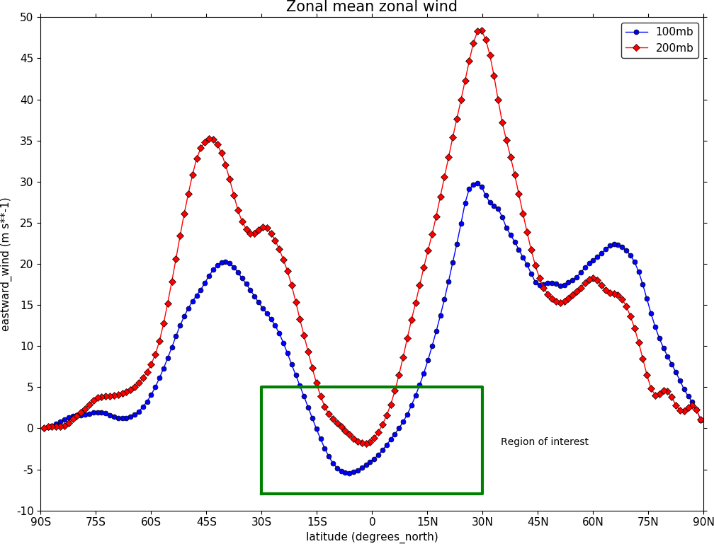

Graphs¶
Example 27 - graph plot¶

import cf, cfplot as cfp
f=cf.read('/opt/graphics/cfplot_data/ggap.nc')[7]
g=f.collapse('X: mean')
cfp.lineplot(g.subspace(pressure=100), marker='o', color='blue',\
title='Zonal mean zonal wind at 100mb')
Other valid markers are:
Example 28 - Line and legend plot¶
{kind=link}
import cf, cfplot as cfp
f=cf.read('/opt/graphics/cfplot_data/ggap.nc')[7]
g=f.collapse('X: mean')
xticks=[-90,-75,-60,-45,-30,-15,0,15,30,45,60,75,90]
xticklabels=['90S','75S','60S','45S','30S','15S','0','15N','30N','45N','60N','75N','90N']
xpts=[-30, 30, 30, -30, -30]
ypts=[-8, -8, 5, 5, -8]
cfp.gset(xmin=-90, xmax=90, ymin=-10, ymax=50)
cfp.gopen()
cfp.lineplot(g.subspace(pressure=100), marker='o', color='blue',\
title='Zonal mean zonal wind', label='100mb')
cfp.lineplot(g.subspace(pressure=200), marker='D', color='red',\
label='200mb', xticks=xticks, xticklabels=xticklabels,\
legend_location='upper right')
cfp.plotvars.plot.plot(xpts,ypts, linewidth=3.0, color='green')
cfp.plotvars.plot.text(35, -2, 'Region of interest', horizontalalignment='left')
cfp.gclose()
In this example a plot with user specified axes is made. The new axis labelling and legend must be added in the final call to lineplot. All previous calls to lineplot must have set the label attribute so that the line labels are ready for making the legend. A text box and some text are added to a region of interest. The cfp.plotvars.plot object contains the plot and will accept normal Matplotlib plotting commands.
Valid locations for the legend_location keyword are:
When making a call to lineplot the following parameters overide any predefined CF defaults:
Example 29 - Global average annual temperature¶

In this example we subset a time data series of global temperature, area mean the data, convert to Celsius and plot a linegraph.
When using gset to set the limits on the plotting axes and a time axis pass time strings to give the limits i.e. cfp.gset(xmin = ‘1980-1-1’, xmax = ‘1990-1-1’, ymin = 285, ymax = 295)
import cf, cfplot as cfp
f=cf.read('/opt/graphics/cfplot_data/tas_A1.nc')
temp=f.subspace(time=cf.wi(cf.dt('1900-01-01'), cf.dt('1980-01-01')))
temp_annual=temp.collapse('T: mean', group=cf.Y())
temp_annual_global=temp_annual.collapse('area: mean')
temp_annual_global.Units -= 273.15
cfp.lineplot(temp_annual_global, title='Global average annual temperature', color='blue')